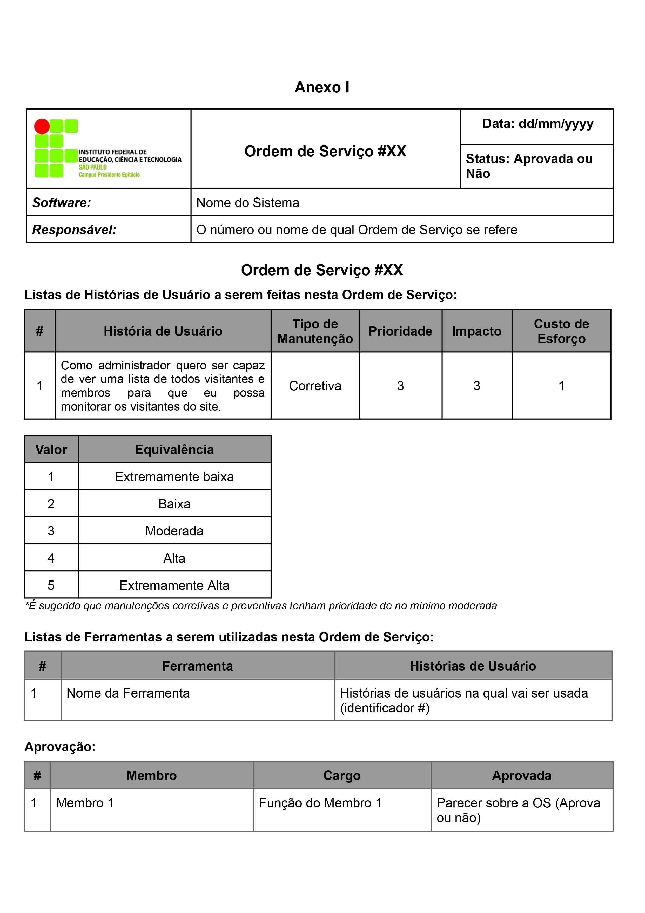

1. Elencar as necessidades
Voltar para o diagramaDescrição
O Product Owner irá levantar as necessidades de mudanças e/ou implementação requisitadas pelos clientes,e se for possível, um auxiliar ao Product Owner para que possa conduzir a escrita das necessidades de mudanças.
Responsáveis
Product Owner.
Entradas e saídas
Entrada
- Necessidade de mudanças.
Saída
- Requisitos de mudanças.
Tarefas:
- A1.1 Reunião com os stakeholders para levantar as necessidades de mudança.
- A1.2 Elaborar os requisitos de mudança.
Recursos (ferramentas, métodos, técnicas)
- Entrevistas.
- Formulários ou questionários.
- Ferramenta de escrita de arquivo.
- Brainstorming.
Materiais de apoio
- Levantamento de requisitos: Janaína. Técnicas para o levantamento de requisitos. 2009. Disponível em: https://www.devmedia.com.br/tecnicas-para-levantamento-de-requisitos/9151#:~:text=A%20etnografia%20%C3%A9%20uma%20t%C3%A9cnica,o%20sistema%20e%20sua%20hist%C3%B3ria. Acesso em: 09 de mar. de 2023.
- Tutorial do google form https://www.youtube.com/watch?v=mbrAY-bRUDE
- RETRAINING. Técnicas de elicitação de requisitos em entrevista. [S. l.], 2020. Disponível em: https://retraining.inf.ufsc.br/guia/app/classificacoes/tecnicas-de-elicitacao-de-requisitos/entidades/tecnicas-de-elicitacao-de-requisitos-entrevista. Acesso em: 10 mar. 2023.
- RETRAINING. Brainstorming. [S. l.], 2020. Disponível em: https://retraining.inf.ufsc.br/guia/app/classificacoes/tecnicas-de-elicitacao-de-requisitos/entidades/tecnicas-de-elicitacao-de-requisitos-brainstorming. Acesso em: 10 mar. 2023.
2. Analizar requisitos de mudança
Voltar para o diagramaDescrição
Essa atividade trata-se da análise dos requisitos de mudança para o levantamento do tipo de correção, classificação dos problemas, estimativa de esforço e ferramentas a serem utilizadas, para a criação da ordem de serviço.
Responsáveis
Equipe.
Entradas e saídas
Entrada
- Requisitos de mudança.
Saída
- Ordem de serviço.
Tarefas:
- Determinar quais os tipos de correção serão necessárias (corretiva, perfectiva, adaptativa, preventiva);.
- Classificar o nível de severidade dos problemas (baixo, médio, alto), e assim determinar as prioridades e tempo estimado para a resolução dos problemas.
- Fazer a estimativa de esforço / custo monetário.
- Definir ferramentas que serão utilizadas para a manutenção e acompanhamento da mesma.
- Elaborar a ordem de serviço de acordo com o ANEXO I.
Recursos (ferramentas, métodos, técnicas)
- Guia Scrum.
- Ferramentas para manutenção .
- Equipe Scrum.
- Ferramenta de edição para a criação da ordem de serviço.
Materiais de apoio
- SCRUM GUIDES. Scrum Guide. Disponível em: https://www.scrumguides.org/. Acesso em: 10 mar. 2023.
- VISURE SOLUTIONS. Os 7 melhores ferramentas de gestão de requisitos. Publicado em 06 dez. 2021. Disponível em: https://visuresolutions.com/pt/blog/software/top-rm-tools/. Acesso em: 10 mar. 2023.
- SOUSA, E. F. Manutenção de software: definições e dificuldades. DevMedia, 2012. Disponível em: https://www.devmedia.com.br/manutencao-de-software-definicoes-e-dificuldades-artigo-revista-sql-magazine-86/20402. Acesso em: 11 mar. 2023.
3. Planejar sprint
Voltar para o diagramaDescrição
O planejar a sprint trata-se de uma reunião de no máximo 8 horas que irá planejar como será realizado o trabalho durante a sprint. Cada Sprint dura de 2 a 4 semanas.
Responsáveis
Equipe.
Entradas e saídas
Entrada
- Ordem de serviço.
Saída
- Sprint Backlog.
Tarefas:
- Definir a duração da sprint atual.
- Definir quais atividades serão feitas na sprint atual de acordo com as prioridades estabelecidas na ordem de serviço.
- Selecionar as Histórias de Usuário relevantes para o objetivo da Sprint.
- Estimar os pontos das atividades instanciadas.
- Definir as responsabilidades de cada membro da equipe durante a Sprint atual.
Recursos (ferramentas, métodos, técnicas)
- Trello para acompanhamento da realização das atividades.
- Planning Poker para estimar as atividades escolhidas para a Sprint.
Materiais de apoio
- Tutorial de uso do Trello: https://trello.com/tour.
- WEST, Dave. Planejamento do Sprint. [S. l.], [2018]. Disponível em: https://www.atlassian.com/br/agile/scrum/sprint-planning. Acesso em: 10 mar. 2023.
- CARVALHO, Técia. O que é Planning Poker? Aprenda seu funcionamento junto ao Scrum!. [S. l.], 8 nov. 2019. Disponível em: https://www.voitto.com.br/blog/artigo/planning-poker. Acesso em: 10 mar. 2023.
4. Executar as atividades da sprint
Voltar para o diagramaDescrição
Reunião de planejamento para selecionar as tarefas prioritárias do sprint backlog e definir o escopo e objetivo da sprint.
Responsáveis
Equipe.
Entradas e saídas
Entrada
- Sprint Backlog.
Saída
- Feedback da sprint para A5 / Incremento para A6.
Tarefas:
- Definir o objetivo e o escopo da sprint na reunião de planejamento.
- Desenvolver as funcionalidades priorizadas pelo Product Owner.
- Realizar reuniões diárias para acompanhar o progresso e resolver os obstáculos.
- Apresentar o resultado da sprint na reunião de revisão.
- Avaliar o desempenho da equipe e identificar melhorias na reunião de retrospectiva.
Recursos (ferramentas, métodos, técnicas)
- Equipe scrum.
- Ordem de Serviço e Sprint backlog.
- Ferramenta de gestão de projetos ágeis.
- Uma sala ou ambiente virtual onde a equipe possa se reunir.
Materiais de apoio
- SCHWABER, Ken; SUTHERLAND, Jeff. O Guia do Scrum. In: The Scrum Guide: The Definitive Guide to Scrum: The Rules of the Game. [S. l.], 1 nov. 2020. Disponível em: https://scrumguides.org/docs/scrumguide/v2020/2020-Scrum-Guide-US.pdf.
- Project Builder. Scrum: o que é sprint e como executá-lo? Disponível em: https://www.projectbuilder.com.br/blog/scrum-o-que-e-sprint-e-como-executa-lo/.
5. Realizar reunião periódica
Voltar para o diagramaDescrição
Reunião periódica para fazer a demonstração dos resultados e feedback para fazer correção do mesmo, caso necessário.
Responsáveis
Equipe.
Entradas e saídas
Entrada
- Feedback da sprint.
Saída
- Feedback da sprint.
Tarefas:
- Preparar uma agenda com os objetivos, os participantes e a duração da reunião.
- Analisar o feedback obtido no A4.
- Discutir os problemas enfrentados e as oportunidades de melhoria. .
- Revisar o sprint backlog e priorizar itens para o próximo sprint.
- Encerrar a reunião com um resumo dos resultados.
Recursos (ferramentas, métodos, técnicas)
- Um quadro do scrum.
- Facilitador responsável por controlar o tempo da reunião.
- Product Owner para esclarecer dúvidas e validar resultados.
- A equipe que executou as atividades do sprint backlog.
Materiais de apoio
- SCHWABER, Ken; SUTHERLAND, Jeff. O Guia do Scrum. In: The Scrum Guide: The Definitive Guide to Scrum: The Rules of the Game. [S. l.], 1 nov. 2020. Disponível em: https://scrumguides.org/docs/scrumguide/v2020/2020-Scrum-Guide-US.pdf.
- WEST, Dave. Planejamento do Sprint. [S. l.], [2018]. Disponível em: https://www.atlassian.com/br/agile/scrum/sprint-planning. Acesso em: 10 mar. 2023.
6. Revisão da sprint
Voltar para o diagramaDescrição
A Revisão da Sprint é o momento em que a equipe e as partes interessadas conversam sobre o andamento final da sprint, validando as entregas da equipe, verificando se o projeto está de acordo com o estabelecido inicialmente e também o mais importante, que é a coleta do feedback do que foi construído pela equipe. A Revisão da Sprint tem uma duração máxima de 4 (quatro) horas.
Responsáveis
O Scrum Team e os stakeholders. Caso não seja possível a presença de todos stakeholders, apenas a presença do Product Owner. para representatividade para os stakeholders.
Entradas e saídas
Entrada
- Incremento.
Saída
- Feedback do produto pelo Scrum Team e stakeholders.
Tarefas:
- Revisar e apresentar as entregas feitas pelo Team Scrum;.
- Feedback do Product Owner e stakeholders;.
- Validar a entrega de acordo com os requisitos necessários para conclusão da Sprint.
- Verificar se a entrega está de acordo com as definições da Sprint.
Recursos (ferramentas, métodos, técnicas)
- GitHub.
- Trello.
Materiais de apoio
- SCHWABER, Ken; SUTHERLAND, Jeff. O Guia do Scrum. In: The Scrum Guide: The Definitive Guide to Scrum: The Rules of the Game. [S. l.], 1 nov. 2020. Disponível em: https://scrumguides.org/docs/scrumguide/v2020/2020-Scrum-Guide-US.pdf.
7. Atualizar a documentação
Voltar para o diagramaDescrição
O objetivo dessa atividade é garantir que toda a documentação relacionada ao processo de manutenção seja atualizada para refletir as mudanças feitas durante a sprint. Isso pode incluir atualizações em manuais de usuário, especificações de requisitos, planos de testes, entre outros documentos relevantes.
Responsáveis
Equipe.
Entradas e saídas
Entrada
- Feedback da sprint.
Saída
- Documentação atualizada.
Tarefas:
- Revisar a documentação existente para determinar quais documentos precisam ser atualizados com base nas mudanças feitas durante a sprint.
- Identificar e definir o escopo da atualização da documentação, que pode incluir manuais de usuário, especificações de requisitos, planos de testes, diagramas, etc.
- Realizar as atualizações necessárias nos documentos identificados, garantindo que as mudanças feitas durante a sprint sejam refletidas com precisão.
- Garantir que a documentação atualizada seja clara, completa e precisa, facilitando o entendimento da equipe e outras partes interessadas.
- Verificar se a documentação atualizada está em conformidade com as normas e padrões de documentação da organização.
- Comunicar quaisquer mudanças significativas na documentação para a equipe e outras partes interessadas, a fim de garantir que todos estejam cientes das mudanças realizadas durante a sprint.
- Arquivar a documentação atualizada de forma adequada, a fim de facilitar a recuperação de informações relevantes no futuro.
Recursos (ferramentas, métodos, técnicas)
- Software de edição de documentos como o Microsoft Word.
- Acesso à documentação existente.
- Conhecimento e habilidades de documentação.
- Políticas e normas de documentação.
Materiais de apoio
- PROTOTYPR. Software Documentation: Types and Best Practices. Blog Prototypr, 13 mar. 2018. Disponível em: https://blog.prototypr.io/software-documentation-types-and-best-practices-1726ca595c7f. Acesso em: 9 mar. 2023.
- ISO/IEC. Guide to the Software Engineering Body of Knowledge (SWEBOK), Version 3.0. International Organization for Standardization, 2014.].
8. Retrospectiva da sprint
Voltar para o diagramaDescrição
A Retrospectiva da Sprint é o momento em que a equipe inspeciona a última sprint realizada, tanto em relação à própria equipe, quanto as interações feitas, os processos e as ferramentas utilizadas, além de verificar o que deu certo ou não, e como os possíveis problemas foram resolvidos, para então, aplicar melhorias na realização da próxima sprint.
Responsáveis
Equipe.
Entradas e saídas
Entrada
- Documentação atualizada.
Saída
- Relatório das manutenções.
Tarefas:
- Revisar as metas do Sprint e avaliar se foram alcançadas.
- Realizar uma análise da causa dos principais problemas e discutir como evitá-los no futuro.
- Avaliar a qualidade do trabalho entregue durante o Sprint e discutir formas de melhorá-lo.
- Avaliar o desempenho da equipe durante o Sprint e identificar oportunidades de melhoria.
- Registrar e documentar detalhadamente as manutenções concluídas em um relatório de acordo com o ANEXO II, a fim de manter um histórico.
Recursos (ferramentas, métodos, técnicas)
- Google Meet ou Discord.
- Word, LibreOffice ou Google Docs.
Materiais de apoio
- SCHWABER, Ken; SUTHERLAND, Jeff. O Guia do Scrum. In: The Scrum Guide: The Definitive Guide to Scrum: The Rules of the Game. [S. l.], 1 nov. 2020. Disponível em: https://scrumguides.org/docs/scrumguide/v2020/2020-Scrum-Guide-US.pdf.
9. Verificar atividades restantes da ordem de serviço
Voltar para o diagramaDescrição
Aqui ocorre a verificação da Ordem de Serviço para ver se ainda restam itens que devem ser concluídos. Caso existam, é importante dar continuidade ao projeto adicionando o item na blacklist, onde contém as informações do item em questão e a data que deveria ter sido entregue, é importante armazenar os dias perdidos. E caso não existam itens pendentes, o projeto poderá ser dado como finalizado.
Responsáveis
Product Owner.
Entradas e saídas
Entrada
- Relatório da manutenção.
Saída
- Avaliação das atividades da Ordem de Serviço.
Tarefas:
- Analisar o estado atual da Ordem de Serviço.
- Verificar a quantidade de itens que foram atendidos.
- Adicionar os itens que não foram entregues conforme o documento do ANEXO III .
Recursos (ferramentas, métodos, técnicas)
- GitHub.
- Trello.
Materiais de apoio
- SCHWABER, Ken; SUTHERLAND, Jeff. O Guia do Scrum. In: The Scrum Guide: The Definitive Guide to Scrum: The Rules of the Game. [S. l.], 1 nov. 2020. Disponível em: https://scrumguides.org/docs/scrumguide/v2020/2020-Scrum-Guide-US.pdf.
Anexo I
 Baixar DocumentoAnexo II
 Baixar Documento
Baixar Documento